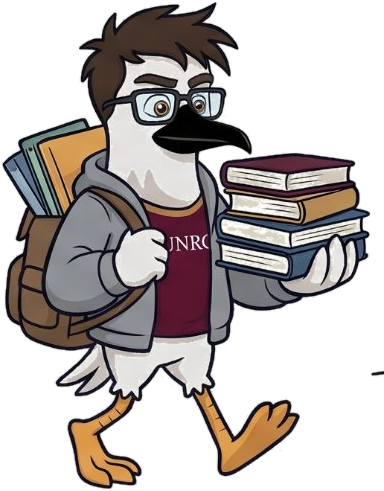
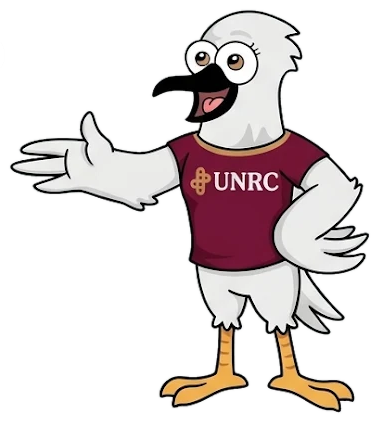

Biblioteca — Psicología. Compilación de libros y artículos de psicología: salud mental, intervención psicológica, psicología clínica y clásicos como los Principios de psicología de William James.


Biblioteca — Psicología. Compilación de libros y artículos de psicología: salud mental, intervención psicológica, psicología clínica y clásicos como los Principios de psicología de William James.

Biblioteca — Filosofía. Colección de libros de filosofía: hermenéutica (Gadamer, Dilthey, Palmer), Aristóteles, Pico della Mirandola y clásicos grecolatinos en dominio público.

Biblioteca — Temas de estudio. Libros y artículos de diferentes temas para tu estudio: educación a distancia, hábitos de estudio, cultura digital y el informe Delors de la UNESCO.